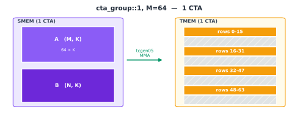

Blackwell Tensor Core: tcgen05.mma#
Overview
tcgen05.mmatypically reads A and B from SMEM and updates the C/D accumulator in TMEM. The epilogue later brings the result back into registers withtcgen05.ld.cta_group::1uses the current CTA, whilecta_group::2uses a CTA pair. The two modes use different TMEM accumulator mappings.Block-scaled MMA also needs SFA and SFB in TMEM. In the loading path used here, these scale factors first enter SMEM, then move to TMEM through
tcgen05.cp, where they are sharded or replicated according to how the CTA pair divides A and B.
Tensor Core Operand Layouts Across GPU Generations traced the data path for matrix multiply-accumulate (MMA) across Ampere, Hopper, and Blackwell. This chapter narrows the focus to Blackwell’s tcgen05.mma: how one MMA is issued, how its accumulator maps into TMEM, and how cta_group determines whether the operation uses the current CTA or a CTA pair.
TMA, introduced in the previous chapter (Async Data Movement: TMA), usually moves A and B tiles into SMEM asynchronously. We begin after those tiles have arrived. From there, we will see how tcgen05.mma performs the matrix multiply-accumulate, where it places the result in TMEM, and why block-scaled MMA needs an additional scale-factor path.
Keep the default M=128 and N=16, then step forward along K to watch the partial products accumulate in TMEM. You can also transpose A or B, or change N, to compare the input tiles, output tile, and instruction parameters for different configurations.
Start with the default view. Each cell represents a 16 × 16 block of elements. Although the output tile C has shape 128 × 16, it therefore appears as an 8-by-1 grid of cells. Each click on K iteration makes the Tensor Core read one 128 × 16 slice of A, shown as 8 × 1 blocks, and one 16 × 16 slice of B, shown as a single block. Their product contributes one 128 × 16 partial result.
The first iteration uses accum=0. It does not read the existing TMEM accumulator and writes the current product directly into the C tile:
C[0:128, 0:16] =
A[0:128, k:k+16] × B[k:k+16, 0:16]
Later iterations use accum=1 and add each new partial result to the value already in TMEM:
C[0:128, 0:16] +=
A[0:128, k:k+16] × B[k:k+16, 0:16]
Every K iteration updates the same 128 × 16 TMEM region. That region contains the final C tile only after the last iteration completes.
The bottom of the figure also shows the descriptors and PTX instruction used by this MMA. The next section explains their fields.
We will now look at how the instruction is issued, what cta_group controls, and how the accumulator maps into TMEM.
How tcgen05.mma Executes#
tcgen05.mma is Blackwell’s Tensor Core matrix multiply-accumulate instruction. It operates on a complete matrix tile rather than assigning an independent scalar multiply-accumulate to each thread.
Unlike Ampere’s mma.sync and Hopper’s wgmma.mma_async, tcgen05.mma has single-thread semantics. One elected thread issues the instruction, and the hardware launches the full tile-level MMA. The other threads do not each submit a copy of the same instruction.
The following is a common tcgen05.mma form for the case where both A and B reside in SMEM and block scaling is disabled:
tcgen05.mma.cta_group.kind
[d-tmem], a-desc, b-desc, idesc,
{disable-output-lane}, enable-input-d {, scale-input-d};
Its operands and qualifiers have the following roles:
Field |
Role |
|---|---|
|
Selects the current CTA or a CTA pair as the resources used by the MMA |
|
Selects the data-type family for A and B |
|
Gives the starting TMEM address of the C/D accumulator |
|
Describe the addresses and layouts of A and B in SMEM |
|
Specifies M, N, K, the concrete A/B and C/D data types, operand major modes, and other instruction parameters |
|
Selects TMEM lanes that will not be updated; the default example leaves every lane enabled |
|
Corresponds to |
|
Optionally scales the existing D before accumulation; the examples in this chapter do not use it |
The default configuration in the interactive figure uses cta_group::1.kind::f16. Later kernels in this book also commonly use .kind::f16 with an f32 accumulator selected in idesc. Here .kind::f16 identifies the 16-bit floating-point family for A and B. idesc separately chooses whether A and B are f16 or bf16, and whether C/D is f16 or f32.
cta_group does not change the single-thread issue semantics. It only determines whether the operation uses the current CTA or a CTA pair. The corresponding CTA responsibilities and TMEM mappings, along with the SFA and SFB addresses needed by block-scaled forms, appear later in this chapter.
For the path considered here, where A and B come from SMEM, two layouts matter:
The SMEM layout determines how the Tensor Core interprets and reads A and B.
The TMEM layout determines how the C/D accumulator maps to TMEM lanes and columns.
These layouts belong to different memory spaces. Their concrete mappings depend on the instruction shape, data types, and operand major modes of the current tcgen05.mma. We will use the named axes and swizzle concepts introduced in Data Layout and Its Notation to describe them.
Issuing tcgen05.mma starts an asynchronous operation; it does not mean the result has already reached TMEM. The same thread can issue one or more MMA instructions and then execute
tcgen05.commit
to make an mbarrier track the asynchronous tcgen05 operations previously issued by that thread. When the hardware finishes those operations, it signals completion through the barrier.
Other warps can move data or prepare later tiles while the MMA is in flight. Before a consumer reads the accumulator with tcgen05.ld, it must wait for the corresponding mbarrier and execute
tcgen05.fence::after_thread_sync
to order the completion notification before the subsequent TMEM access. Otherwise, the epilogue could read TMEM while the accumulator is still being updated. The asynchronous synchronization chapter develops this protocol in detail.
The Accumulator in TMEM#
In the PTX programming model for Ampere and Hopper, the accumulator resides in registers. MMA results are distributed across the participating threads as register fragments, which the epilogue can read and process directly. As the accumulator tile grows, those long-lived fragments consume more registers.
Blackwell moves the long-lived accumulator into TMEM. TMEM is a two-dimensional, CTA-scoped on-chip memory space. On sm_100a, each CTA has 128 Lane rows and 512 Col columns, with one 32-bit cell at each Lane/Col coordinate. tcgen05.mma repeatedly updates the accumulator in TMEM, and the epilogue eventually loads it into registers with tcgen05.ld for conversion, elementwise work, and stores.
tcgen05.ld is itself asynchronous. Before using its destination registers, the warp must execute tcgen05.wait::ld to confirm that its earlier TMEM loads have completed.
The accumulator therefore no longer occupies registers throughout the main loop. Instead, the kernel must manage TMEM allocation and layout: MMA must write each result to the right TMEM coordinates, and the epilogue must read it back with a matching layout. The next chapter covers TMEM allocation, addressing, and data movement.
How cta_group Sets the Operation Scope#
With cta_group::1, the MMA updates only the current CTA’s TMEM. We begin with the common dense-A path, where every A element is stored explicitly and descriptors supply both A and B from SMEM. Some tcgen05.mma variants can instead read A from TMEM.
With cta_group::2, the MMA accesses the TMEM of both CTAs in a pair. A CTA pair consists of two CTAs in the same cluster whose %cluster_ctarank values differ only in the least-significant bit. One rank is even and the other is odd; we refer to them below as the even CTA and the odd CTA.
Only one thread in the CTA pair needs to issue tcgen05.mma. That thread may belong to either CTA, but the peer CTA must remain active. The kernels later in this book generally elect one thread in the even CTA to issue the MMA and use tcgen05.commit to arrange completion notification.
The accumulator layout depends on four choices: cta_group, the size of M, whether A is dense or structured sparse, and whether the instruction is ordinary tcgen05.mma or the weight-stationary tcgen05.mma.ws. The selected layout maps each logical coordinate (m,n) to TLane and TCol.
The instruction descriptor supplies N. For the f16/bf16 path considered here, cta_group::1 supports N from 8 through 256 in increments of 8, while cta_group::2 supports N from 16 through 256 in increments of 16. The four figures below use the symbol N for any of these legal values. Purple denotes SMEM operands, orange denotes the TMEM accumulator, and green denotes the Tensor Core MMA path.
cta_group::1, M = 128#
This is the direct case. One CTA computes a 128-row output tile, and its TMEM has exactly 128 Lane rows. Accumulator row m therefore maps directly to TMEM Lane m, while N extends across TMEM columns.
The result occupies 128 Lane rows and N Col columns. The CTA reads A and B from its own SMEM and keeps the complete accumulator tile in its own TMEM.

cta_group::1, M = 64 (without .ws)#
When M = 64, the accumulator has only 64 rows, but TMEM still has 128 Lane rows. This section covers ordinary tcgen05.mma, not the weight-stationary .ws form. Its TMEM mapping uses Layout F.
Layout F divides the 128 TMEM lanes into four 32-lane regions, corresponding to warp-rank % 4 = 0,1,2,3 in the hardware data path. It also divides the 64 M rows into four groups of 16 and places one group in each region. Because a group contains only 16 rows, the current tile uses only half of each 32-lane region.
Let a be the TMEM lane alignment, either 0 or 16. Logical row m maps to
group = m // 16
row_in_group = m % 16
TLane = group * 32 + a + row_in_group
With lane alignment 0, the mapping is
rows 0-15 -> lanes 0-15
rows 16-31 -> lanes 32-47
rows 32-47 -> lanes 64-79
rows 48-63 -> lanes 96-111
Lanes 16-31, 48-63, 80-95, and 112-127 do not belong to this tile.
Layout F also permits lane alignment 16. A second, independent M=64 tile can then occupy the complementary positions:
rows 0-15 -> lanes 16-31
rows 16-31 -> lanes 48-63
rows 32-47 -> lanes 80-95
rows 48-63 -> lanes 112-127
The two M=64 tiles can therefore share TMEM’s 128-lane structure without overlapping. N still extends across TMEM columns; only the placement of M rows along the Lane axis changes.

cta_group::2, M = 256#
When M = 256, the 128 Lane rows of one CTA cannot hold the complete M dimension, so the accumulator is distributed across the two TMEM allocations in the CTA pair.
The even CTA stores logical rows 0-127, and the odd CTA stores rows 128-255. Each CTA uses lanes 0-127 in its own TMEM, while N extends across all of its corresponding TMEM columns.
Physically, these are two separate 128-row TMEM regions owned by different CTAs. Logically, they form one 256 × N accumulator tile. How A and B are distributed across the two CTAs’ SMEM depends on the kernel and is not part of this accumulator layout.

cta_group::2, M = 128 (dense A)#
For cta_group::2, M=128 with dense A, PTX uses Layout B for the accumulator. It first divides M across the pair: the even CTA stores C rows 0-63, and the odd CTA stores rows 64-127.
Within each CTA, its 64 M rows are divided into two groups of 32, and N is divided into a lower and an upper half. The two row groups and two N halves form a 2-by-2 mapping onto that CTA’s four 32-lane regions:
N range |
Local M rows in the CTA |
TMEM lanes |
|---|---|---|
|
|
|
|
|
|
|
|
|
|
|
|
Let m_local = m % 64. The CTA and TLane for logical element C[m,n] are
CTA = even, if m < 64
odd, if m >= 64
TLane = m_local, if n < N/2
64 + m_local, if n >= N/2
For example, when N=16, C[10,3] resides at TLane 10 in the even CTA. C[10,11] remains in the even CTA, but because it belongs to the upper half of N, it maps to TLane 74.
This is Layout B for dense A. With structured-sparse A, cta_group::2, M=128 uses Layout C instead, so the mapping above does not apply.

These four layouts specify the CTA and TMEM location to which tcgen05.mma writes each accumulator element. A later tcgen05.ld must use a compatible TMEM address and load shape to reconstruct the original logical C tile.
Block-Scaled MMA#
MXFP8 and NVFP4 are two concrete block-scaled formats introduced earlier. Data Layout and Its Notation explained block scaling and derived the packing and cross-warp replication of SFA and SFB in TMEM. Tensor Core Operand Layouts Across GPU Generations then followed the tcgen05.cp data path and explained how scale_vec selects bytes. We will not repeat those details here. Instead, we will focus on where the scale factors reside in a CTA pair.
We need two relationships. SFA(M,SFK) supplies scale factors for each row of A, while SFB(N,SFK) supplies them for each column of B. Block-scaled tcgen05.mma reads these factors from TMEM while continuing to read A and B from SMEM:
A, B: global memory -> SMEM -> tcgen05.mma
SFA, SFB: global memory -> SMEM -> tcgen05.cp -> TMEM -> tcgen05.mma
Placing Scale Factors Across Two CTAs#
For output coordinate (m,n), A uses SFA[m,sfk] and B uses SFB[n,sfk]. Scale-factor placement in a CTA pair therefore follows the division of M and N.
Consider the M=256 MMA in the figure. The even CTA computes C rows 0-127, while the odd CTA computes rows 128-255. Each side needs only the SFA entries for its own A rows:
even CTA: SFA[0:128, :]
odd CTA: SFA[128:256, :]
The figure uses one common implementation: each CTA stages half of B’s N columns in SMEM, and the cooperative MMA consumes the two halves as one complete B tile. Both sides therefore need the complete
SFB[0:N, :]
A common cta_group::2 block-scaled kernel multicasts this SFB data to the CTA pair so that each CTA’s TMEM can present a complete copy in the layout required by MMA. The figure therefore shards SFA along M and replicates all of SFB on both sides.

Handing Data Between tcgen05 Instructions#
Although one thread issues tcgen05.mma, the instruction performs a tile-level cooperative operation. cta_group determines whether it uses the SMEM and TMEM resources of the current CTA or of a CTA pair. The corresponding TMEM layout then determines the CTA and TLane/TCol coordinates that receive each accumulator element. In the block-scaled path used here, SFA and SFB first move into TMEM through tcgen05.cp and are sharded or replicated according to the division of A and B across the pair.
Connecting asynchronous instructions such as tcgen05.cp, tcgen05.mma, and tcgen05.ld requires three conditions: the operation must target the correct CTA or CTA pair, the producer’s output layout must match the layout expected by the consumer, and the consumer must use the corresponding completion and ordering mechanism before accessing the data. If any condition fails, the hardware may interpret the wrong TMEM coordinates or read data that is still being updated.
The key to understanding tcgen05 is therefore to ask three questions: which CTA resources does this instruction use, where does it map the data, and when may the next stage safely consume the result?